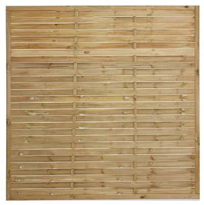
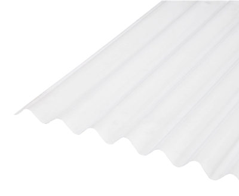

Projects:Partitioning Furniture
| Partitioning Furniture | |
|---|---|
| Description | We are keen to partition off space in the Kettock Lodge space, this project, or series of projects is to address that |
| People | User:Ormiret, User:Andyg |
| Theme | Furniture |
| Website | |
| Status | Active |
We are keen to partition off space in the Kettock Lodge space, this project, or series of projects is to address that.
We will use probably more than one of these solutions to partition off the 57N part of the space. First discussed in Jan or Feb 2020.
Its is ~17m from windows to wall around the stairwell+cupboards, another 5.5m from that to the windows at the other side.
So we have 3 sections to potentially partition off, between walls and pillars. They are...
- 5m
- 6.56m
- 5.5m
Contents
Shelving
From Robert's email to the list email thread.
<copied_from_email>
I'm thinking to make ladder style uprights like the ones on the shelves I made previously and link them with 2x3s¹. I'm thinking 2 2x3s per "shelf" - this wouldn't actually be a shelf but is cheaper than any of the sheet material options and will be pretty strong. It'll work fine for putting boxes on (so long as the bottom of the box can support its contents in the bit between the 2 2x3s) and we can put sheet material on bits of it if we want actual shelves for anything that needs it.
For height: I'm thinking to just use full 2.4m 2x3s for the uprights which will give about a 6cm gap to the ceiling above them.
To go from the pillar to the east wall (where it bumps into the room around the stairwell/cupboards/kitchen bit) would work with 5 uprights giving 3 1.2ish² m bays and one 2.4ish m bay. This'll take 35 2x3s for a total of £95.90. That's with 4 shelves per bay, about the same pitch as the tall set from the last ones I made, would be another 1.5 2x3s per shelf per 1.2m bay to have more shelves.
I'm thinking to put fabric on the outside (of the hackspace) side of the shelf wall to give a clean look to the rest of the room (rather than the collection of junk look of seeing into the hackspace bit of the room). I think the cheapest way to get enough fabric to cover that is 2 super king size sheets. ASDA has them for £9 each³ with a choice of grey, white, cream or pink.
So total of £113.90 for this section - probably ~£125 to give some money to cover screws and glue. I'm thinking make this section first and we can then decide if the same approach is what we want for the other bits or if we want to do something different.
Would want to cover about twice that distance for the other side coming across from the windows so ball park would be twice as much for that section. But I'm thinking that would be more shelves than we actually need so should probably do some other stuff with some of the bays on the other side (wood (or other long thin stuff) rack, some hooks for hanging stuff, any other ideas?)
</copied_from_email>
Doors
We could use doors to make a flexible concertina style partition. Doors are quite cheap, and would maybe look interesting as a partition. The cheapest door is about £15 which would be 198cm tall by 61cm wide.
Board Partitions
We could make a partition with wooden sheet material. This would / could be 244cm tall by 122cm wide. Typical costs for sheet material are...
- Fiberboard 3mm - £13.24
- MDF 6mm - £13.49
- MDF 9mm - £15.74
- MDF 12mm - £19.47
- OSB 12mm - £19.47
- Plywood 5mm - £21.50
- MDF 18mm - £22.48
- OSB 18mm - £24.47
They'd need a frame or support.
Fabric Partitions
We could go a nice Japanese vibe with paper, fabric or poly sheet walls. They'd need a frame.
Fencing Panels
Maybe too much of a garden vibe, 1.8m x 1.8m is £18. They'd need a frame or support. 
Plastic Roofing Sheet
Maybe too much of a apocalyptic shelter vibe, 2m by 95cm is £10. They'd need a frame or support. 